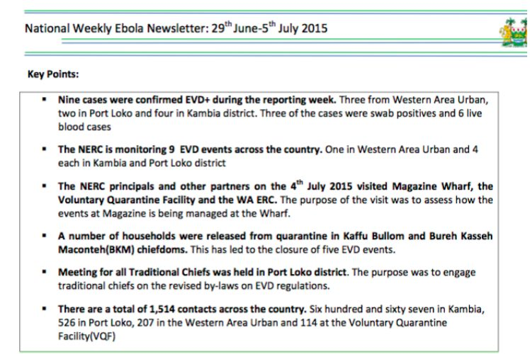
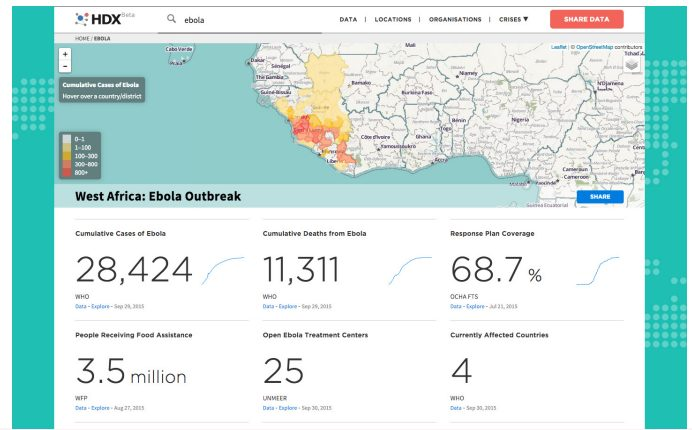
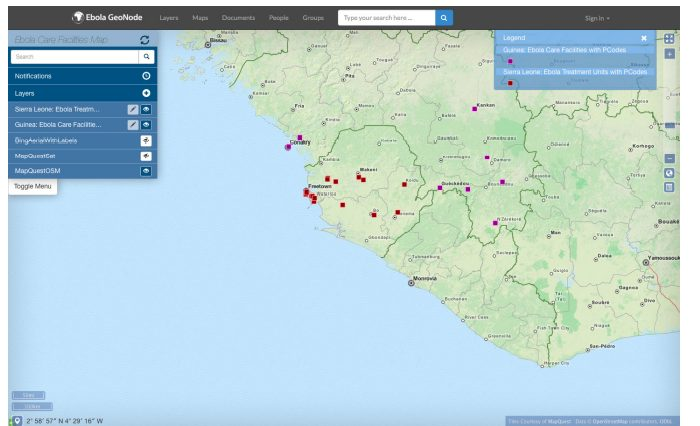

در سال ۲۰۱۴، بزرگترین میزان شیوع بیماری ابولا در تاریخ، در غرب آفریقا، رخ داد. اطلاعات مربوط به موارد ابولا و تلاشهای پاسخدهی در طیف متنوعی از گردآورندگان دادهها، پراکنده شد و توانایی کمی برای رساندن دادههای مرتبط به دست کسانی که میتوانستند از آن استفاده کنند، وجود نداشت. برخی ابتکارات مبتنی بر داده، به دنبال بهبود کیفیت اطلاعات در دسترس برای افراد کوشا در زمینه اهداف بشردوستانه بود که برای رسیدگی به بحران تلاش میکردند. این مطالعه موردی، به طور خاص سه ابتکار را بررسی میکند - مرکز ملی واکنش ابولا سیرالئون (NERC)، تبادل اطلاعات بشردوستانه سازمان ملل (HDX) و Ebola GeoNode - و پتانسیل و چالشهای پروژههای opendata را در مبارزه با بیماری ابولا به طور خاص، و به طور کلی در رسیدگی به بحرانهای انسانی نشان میدهد.
- دادهها و اطلاعات، نقشهای مهمی در نبرد نه تنها در برابر بیماری ابولا، بلکه به طور کلی در برابر انواع بحرانهای طبیعی و انسانی دارند.
- بااینحال، برای به حداکثر رساندن پتانسیل آنها، تقویت سمت عرضه ابتکارات opendata - یعنی اطمینان از در دسترس بودن اطلاعات کافی و با کیفیت بالا، ضروری است. این امر میتواند به خصوص زمانی که هیچ پشتیبانی سیاست روشنی برای وادار کردن نقشآفرینان به انطباق و تنظیم استانداردهای روشن برای کیفیت و قالب داده وجود ندارد، چالشبرانگیز باشد.
- به خصوص در طول بحران، مراحل اولیه تلاش برای منابع داده باز ممکن است هرج و مرج و گاهی اوقات حشو باشد. بهبود هماهنگی بین نقشآفرینان متعددی که برای اهداف مشابه کار میکنند - از طریق تشخیص دشواری در زمان بحران - میتواند به کاهش افزونگی کمک کند و منجر به تلاشهایی شود که بیشتر از مجموع بخشهای آنها است.
۱. پیشینه و زمینه
منابع دادهباز در سیرالئون
در سال ۲۰۱۴، سیرالئون در بارومتر منابع دادهباز در رتبه هفتاد و هشتم قرار گرفت، یک رتبهبندی که آن را نزدیک به پایین قرار داد. بااینوجود، به دلیل قانون حق دسترسی به اطلاعات کشور، تصویب شده در سال ۲۰۱۳، که به انتشار فعالانه تنوع دادهها و اطلاعات عمومی نیاز دارد، به عنوان "کشوری برای تماشا" مشهور شد. دولت در سالهای اخیر تلاشهایی را برای دسترسی بیشتر به دادهها، در قالب دیجیتال و غیردیجیتال انجام دادهاست. همچنین در سال ۲۰۱۳، سیرالئون با پروژههای دادهباز، که بخش قابلتوجهی از اولین تعهدات برنامه اقدام OGP را نشان میدهند، به مشارکت دولت باز (OGP) پیوست.
یکی از مهمترین تلاشهای دادهباز کشور، منابع دادهباز سیرالئون است که اقدام گروه منابع دادهباز بانک توسعه آفریقا برای پروژه آفریقا است. این سایت شامل تعدادی مجموعه داده و اطلاعات گرافیکی متمرکز بر اقتصاد، جمعیتشناسی، کشاورزی، انرژی، مراقبتهای بهداشتی، آموزش، سلامت غذایی و تجارت بینالمللی است. بدیهی است، از اواخر سال ۲۰۱۵، به نظر میرسید که تمرکز سایت تا حد زیادی بر موارد و تلفات ناشی از بیماری ابولا باشد.
شکست ابولا در سال ۲۰۱۴
بیماری ویروسی ابولا (EVD)، اولین بار در طول دو شیوع همزمان در سال ۱۹۷۶ کشف شد، یکی در سودان و دیگری در جمهوری دموکراتیک کنگو. این بیماری نام خود را از رودخانه ابولا گرفتهاست، جایی که شیوع بیماری در کنگو در ابتدا رخ داد، و علائم آن شامل تب، سردرد شدید، درد عضلانی، ضعف، خستگی، اسهال، استفراغ، درد شکم و خونریزی غیرقابلکنترل است.
در سال ۲۰۱۴، اولین شیوع ابولا که در غرب آفریقا رخ داد، همچنین بزرگترین شیوع بیماری در تاریخ بود، و به گفته مرکز کنترل و پیشگیری از بیماریهای ایالات متحده (CDC)، "اولین اپیدمی ابولا که جهان تاکنون با آن مواجه شده است. " از مارس ۲۰۱۴ تا سپتامبر ۲۰۱۵، تعداد ۲۸، ۳۵۵ مورد از بیماری ابولا گزارش شد، بیش از ۶۶ برابر تعداد موارد گزارششده در شیوع قبلی (دومین- بزرگترین)، که در ۲۰۰۰ - ۲۰۰۱ در اوگاندا رخ داد.
این بیماری، به سرعت در کشورهای غرب آفریقا - به ویژه سیرالئون، گینه و لیبریا گسترش یافت. این اپیدمی، به احتمال زیاد در نتیجه اعمال و مراسم تدفین سنتی که اعضای خانواده متوفی و کسانی که وظیفه دفن اجساد را در معرض خطر بالای آلودگی قرار میدهند، به سرعت گسترش مییابد. مرزهای بزرگ بین این سه کشور نیز نقش مهمی ایفا کردند. در سپتامبر ۲۰۱۴، شورای امنیت سازمان ملل، ابولا را "تهدیدی برای صلح و امنیت بینالمللی" اعلام کرد؛ متخصصین پیشبینی کردهاند که این بیماری میتواند ۱۰۰، ۰۰۰ نفر را بکشد و برای مهار موفقیتآمیز آن به ۱ میلیارد دلار بودجه نیاز دارد.
در ۱۹ سپتامبر ۲۰۱۴، ماموریت سازمان ملل متحد برای واکنش اضطراری در برابر ابولا (UNMEER) تاسیس شد. UNMEER "به عنوان یک اقدام موقت برای مهار قابلیتهای تمام فعالان مرتبط سازمان ملل تحت یک سیستم مدیریت بحران عملیاتی منحصر به فرد برای تقویت وحدت هدف در میان پاسخدهندگان و برای اطمینان از یک واکنش سریع و موثر به بحران ابولا" مورد استفاده قرار گرفت. UNMEER تلاشهای سازمان ملل را برای متوقفکردن نشر ابولا در غرب آفریقا تا اول آگوست ۲۰۱۵، زمانی که سازمان بهداشت جهانی (WHO) نقش هماهنگی مرکزی را بر عهده گرفت، رهبری کرد. هماهنگی بین نقشآفرینان سیرالئون و در سراسر جامعه بینالمللی، برای مبارزه با بحران ابولا، ضروری بود. در واقع، همانطور که پروژههای بحث شده در زیر (و در چندین مطالعه موردی دیگر در این مجموعه) نشان میدهند، هماهنگی، همکاری و به اشتراکگذاری اطلاعات در پاسخ به انواع بحرانهای انسانی و دیگر بحرانها، مهم هستند.
۲. توصیف و آغاز پروژه
استفاده از دادهها در مبارزه با ابولا
در اوایل، مشخص شد که اطلاعات در نبرد علیه ابولا، کلیدی خواهند بود. تلاشها برای مبارزه با این اپیدمی، برای مثال، با به اشتراکگذاری اطلاعات محدود بین دولتهای ملی، سازمانهای کمکرسانی و نقشآفرینان خط مقدم مانند کلینیکهای بهداشتی روستایی که اغلب فشار بحران را تحمل میکردند، مختل شد. حتی پایهایترین اطلاعات - برای مثال، تعداد موارد ابتلا یا مرگ - به سختی به دست آمد، و ارزیابی شدت اپیدمی و مداخلات هدف را دشوار کرد. به تمام این دلایل، رئیس سازمان ملل متحد، آنتونی بنبری، در نوامبر ۲۰۱۴ قول داد که " ما واقعا اطلاعات و دادهمحور خواهیم بود و این واکنش، توانایی ما را تقویت خواهد کرد."
با شناخت اهمیت دولتهای اطلاعاتی، آژانسهای کمکرسانی و سازمانهای بینالمللی، به زودی شروع به طراحی و اجرای تعدادی از ابزارهای مرتبط با منابع داده کردند. این مطالعه موردی بر روی سه ابزار و ابتکار متمرکز است که نقش مهمی در کاهش بحران سلامت عمومی ایفا میکنند: مرکز واکنش ملی Ebola (NERC)، تبادل داده بشردوستانه (HDX) و Ebola GeoNode.
مرکز واکنش ملی نسبت به بیماری ابولا (NERC)
در اکتبر ۲۰۱۴، سیرالئون NERC را ایجاد کرد، که تمام جنبههای تلاشهای پاسخدهی در زمینه ابولا در کشور را هدایت کرد و فعالیتهای مراکز واکنش ابولا (DERCها) منطقه را هماهنگ کرد. NERC ریاستجمهوری سیرالئون را با وزارتخانههای بهداشت و سلامت، متحد کرد؛ همچنین با دولت محلی و توسعه روستایی؛ رفاه اجتماعی، جنسیت و امور کودکان؛ امور خارجه؛ توسعه مالی و اقتصادی؛ دفاع؛ امور داخلی؛ و اطلاعات و ارتباطات. علاوهبراین، NERC با سازمانها و گروههای خارجی مانند CDC، صلیبسرخ، بانک جهانی، وزارت توسعه بینالمللی بریتانیا (DFID)، بانک توسعه آفریقا و سفارت آمریکا هماهنگ شدهاست.
NERC یکی از تلاشهای بسیاری بود که سازمانهای بینالمللی و نقشآفرینان دولتی برای کمک به تلاشهای داخلی برای کاهش اثرات این بیماری و توقف گسترش آن انجام دادند. به عنوان مثال، ابتکار حاکمیت آفریقا (AGI)، در انگلستان، به ایجاد اتاق وضعیت در NERC کمک کرد، که بر روی قرار دادن مهمترین اطلاعات در دستان تصمیمگیرندگان در بهترین موقعیت برای عمل بر روی آن تمرکز کرد. از بسیاری جهات، اتاق وضعیت - و NERC - در درجه اول تلاش برای ایجاد زیرساخت برای جمعآوری و انتشار اطلاعات مهم مربوط به بحران بودند. این زیرساخت به شدت مورد نیاز بود، زیرا همانطور که OB Sisay، مدیر اتاق وضعیت میگوید: "معمای اصلی مشکل، بیماری ابولا نیست. این نقص سیستم است."
روپرت سیمونز (Rupert Simons)، مدیرعامل Publish What You Fund و مشاور سابق AGI، به راهاندازی اتاق تعیین وضعیت کمک کرد و تیم را رهبری کرد، زیرا تلاشهای روزانه جمعآوری دادهها در مورد شرایط را انجام میداد. بخش کلیدی این تلاشها شامل طراحی، پیادهسازی و نگهداری یک سیستم گزارشدهی برای ۱۴ منطقه در سیرالئون بود. سیمونز، سیستم گزارشدهی را به عنوان موردی توصیف میکند که در آن از مناطق خواسته شدهبود "روزی یکبار با اطلاعات مربوط به پاسخ با ما تماس بگیرند یا ایمیل بزنند. ما از آنها نپرسیدیم که چه تعداد بیمار ابولا دارند؛ وزارت بهداشت این را میداند. اما ما پرسیدیم که آنها چند تخت امن دارند، روزانه چند تماس برای بررسی یک پرونده دریافت میکنند، و چند نفر جان خود را از دست دادهاند، زیرا هر کسی که میمیرد باید یک دفن پزشکی ایمن انجام شود."
اتاق وضعیت که مجهز به چنین اطلاعات زمینهای بود، دو بار در روز در NERC میزبان جلسات توجیهی به منظور رهبری بود. این گزارشها، بر شناسایی و عملیاتی کردن نقاط کلیدی اقدام براساس اطلاعات روز متمرکز بودند که معمولا شامل مقاماتی از دولت، UNMEER و سایر نهادهای سازمان ملل، و نهادهای کمکرسانی دولتی و غیردولتی بودند.

همچنین NERC یک جلسه توجیهی روزانه را با عموم مردم (معمولا از طریق رادیو)، و همچنین یک خبرنامه هفتگی و کنفرانس مطبوعاتی، به اشتراک گذاشت. گزارشهای عمومی، شامل طیف گستردهای از اطلاعات در مورد وضعیت فعلی ابولا، از جمله حقایق و ارقام در مورد وضعیت بیماری (که اغلب توسط منطقه شکسته میشود)، محل و دسترسی به مراکز درمانی، و سایر اطلاعات در مورد مراحل رسیدگی به بحران بود.
تبادل دادههای بشردوستانه (HDX)
در ۱۵ جولای ۲۰۱۴، در جشنواره دانش باز در برلین، دفتر هماهنگی امور بشردوستانه سازمان ملل (OCHA) توسعه تبادل داده بشردوستانه (HDX) را اعلام کرد. HDX بهعنوان "یک پلتفرم جدید به اشتراکگذاری دادهها، طراحی شده بود که بهترین استانداردها را در روند جمعآوری دادهها در بر میگیرد و دسترسی به دادههای مفید و دقیق را ارائه میدهد." که برای پوشش طیف گستردهای از بحرانهای بشردوستانه در سراسر جهان طراحی شده بود، این پلتفرم در ابتدا بر روی دو مکان آزمایشی در کنیا و کلمبیا متمرکز بود. اما با بدتر شدن بحران ابولا، پتانسیل HDX در غرب آفریقا به سرعت آشکار شد و به یکی از مهمترین تلاشها در جهت جمعآوری دادهها به منظور مبارزه با این اپیدمی تبدیل شد.
HDX به عنوان یک "ویکیپدیا دادهمحور بشردوستانه" شناخته میشود. به کاربران اجازه میدهد تا مجموعههای داده خاص را ردیابی و دنبال کنند، مراکز داده سازمان محدود را ایجاد کنند، و دادهها را در سراسر سازمانهای تحت نفوذ قبلی به اشتراک بگذارند که برای بهبود تلاشهای بشردوستانه در سراسر جهان کار میکنند. به گفته جاویر تران، آمارگیر OCHA که روی HDX کار میکند، این پلتفرم از ابتدا بر روی "شاخصهای پایهای که بشردوستان همیشه از آنها استفاده میکنند، مانند آمار جمعیت و نرخ مرگومیر - انواع دادههای مربوط به یک بحران، قبل، حین و بعد از آن، متمرکز بود. راهاندازی Atits، HDX حدود ۱۶۰۰ فایل را در خود جای داد که طیف وسیعی از مناطق و نگرانیهای بشردوستانه را پوشش میداد – اما هیچ یک از این فایلها مورداستفاده قرار نگرفتند که HDX را از یک پلتفرم کاملاً فرضی، به یک پلتفرم کاربردی واقعی، تبدیل کند.
تران به یاد میآورد که در اواخر سال ۲۰۱۴، "ما [تیم پشتیبان HDX] از سوی سازمان ملل به عنوان پلتفرم تبادل اطلاعات ابولا منصوب شدیم." افزودن دادههای منطقهای - از سیرالئون، گینه و لیبریا - که از سازمان جهانی بهداشت گرفته شده است. WHO دادههایی را در مورد تعداد موارد و تلفات ابولا، مکان موارد، مقدار پولی که برای این بحران خرج میشود، و همچنین اطلاعاتی در مورد مراکز درمان ابولا (ETCs - به عنوان مثال، تعداد موارد باز در آن زمان به این پلتفرم داده است، تعداد آنها در نهایت برای افتتاح برنامهریزی شده بود و مکان آنها). نمایندگان سازمان جهانی بهداشت در محل وظیفه جمعآوری، اعتبارسنجی و نظارت بر اطلاعات را داشتند.
تا ژانویه ۲۰۱۶، HDX تعداد ۱۷۸ مجموعه داده در صفحه موقعیت سیرالئون، از جمله اطلاعات مربوط به تعداد کارکنان مراقبتهای بهداشتی را در اختیار داشت؛ همچنین وضعیت و مکان ETC ها؛ وضعیت و مکان تیمهای دفن ایمن و بهداشتی؛ محل موسسات آموزشی؛ موقعیت و مکان مراکز مراقبت از جامعه ابولا و بسیاری موارد دیگر. تاریخ باز شدن مورد انتظار برای ETC های جدید، یکی از مهمترین بخشهای اطلاعات در HDX بود. این اطلاعات بلافاصله در قالبهای قابلمحاسبه برای تحلیلگران و توسعهدهندگان که بر روی پاسخدهی در زمینه بیماری ابولا کار میکردند، قابل دسترس شد.
به منظور جمعآوری تمام این اطلاعات، تیم HDX داده گزارش وضعیت WHO را با اطلاعات گرفتهشده از منابع دادههای موجود، مانند داده مکانی OpenStreetMap و مجموعه داده عملیاتی مشترک OCHA ترکیب کرد.
یک وظیفه اصلی که تیم HDX از ابتدا با آن مواجه بود، نیاز به "برقراری ارتباط با بازیکنان مختلف در این زمینه" بود. برای مثال، مدتی طول کشید تا نمایندگان سازمان جهانی بهداشت "اطلاعات را یکپارچه، و استاندارد کنند و آن را قابل مقایسه با اطلاعات منابع دیگر و کشورهای دیگر سازند." این چالش، مانند بیماری ابولا، محدود به سیرالئون نبود. تران میگوید: "ما نه تنها با یک کشور بلکه با سه کشور سر و کار داشتیم." این نیاز به کار در مرزها، درجه قابلتوجهی از پیچیدگی را به تلاش HDX و در واقع به دیگر پروژههای داده مورد بحث در این مطالعه موردی، میافزاید.
همانطور که پلتفرم HDX گسترده شد، تجسمها، که بسیاری از آنها با پلتفرمهایی مانند Tableau و CartoDB ایجاد شده بودند، نیز اضافه شدند. زمینه بحران ابولا، پیوندی به هر یک از مهمترین مجموعههای داده در این پلتفرم را نشان میدهد: موارد تجمعی ابولا، مرگهای گروهی ناشی از ابولا، پوشش طرح پاسخدهی، افرادی که کمک غذایی دریافت میکنند، و مراکز درمانی OpenEbola. هر یک از این موارد را میتوان به عنوان دادههای خام یا به عنوان تصویرسازی کاربرپسند در نظر گرفت. به گفته تران، آماردانانی که از دادههای HDX استفاده میکردند "سعی میکردند همه این صفحات گسترده، CSV و نقشهها را به اطلاعاتی تبدیل کنند" که درک آن آسانتر بود. در حالی که دادههای خام برای سیاستگذاران و سایرین که با این بیماری مبارزه میکردند ضروری بود، تجسمها نقش مهمی در انتشار اطلاعات از طریق واسطههایی مانند رسانهها ایفا کرد.

Ebola GeoNode
نتیجه همکاری با صلیب سرخ، بانک جهانی، تسهیلات جهانی برای کاهش و بازیابی بلایا (GFDRR)، UNMEER و واحد اطلاعات بشردوستانه ایالات متحده (HIU)، Ebola GeoNode یک پلتفرم منبع باز جغرافیایی است که به کاربران امکان میدهد نقشه تجزیه و تحلیل جغرافیایی در مورد اثرات ابولا در غرب آفریقا را طراحی کرده و اجرا کنند. به گفته پاتریک دوفور، توسعهدهنده ارشد سابق Web GIS در HIU، Ebola GeoNode در درجه اول "یک پلتفرم دادهباز" است و با این هدف طراحی شده است "تا آنجا که میتوانید [داده] را باز کنید."
در حال حاضر، GeoNode شامل ۶۱ مجموعه داده است که شامل دادههایی درباره مرزهای اداری در کشورهای آسیبدیده، اطلاعات حملونقل و تجهیزات و دادههای بحران سلامت با برچسب جغرافیایی است. با توجه به نظر دافور، دادههای تدارکات - مانند مکان تسهیلات بهداشتی ETC ها - بخش مهمی از پلتفرم را اشغال میکنند. در عین سادگی، چنین اطلاعاتی کمک کرد تا اطمینان حاصل شود که نقشآفرینان در این زمینه، مانند نمایندگان USAID و UNMEER، درک روشنی از مکان نقاط مهم دارند - "صرفهجویی در یک گروه از مردم."
با این حال، گره جغرافیایی بیشتر از یک مجموعه ساده از نقاط روی نقشه است. اطلاعات روی پلتفرم در سه دسته وجود دارد: لایهها، نقشهها و اسناد. در ردههای لایهها و نقشهها، کاربران این گزینه را دارند که اطلاعات را به طور مستقیم بر روی وبسایت گره جغرافیایی دستکاری کنند یا آن را برای هر استفاده دیگری دانلود کنند. به عنوان مثال، هنگام انتخاب لایه مراکز مراقبت اجتماعی سیرالئون (CCC)، کاربر میتواند دادههای مکانی در مکانهای CCC را بر روی هارددرایو خود در فرمتهای مختلف دانلود کند، یا یک نقشه جدید بر روی گره جغرافیایی با استفاده از دادههای CCC به عنوان یک لایه، با گزینه افزودن لایههای اضافی - مانند محل مسیرهای تامین جهانی ایجاد کند. به طور مشابه، هشت نقشه تولیدشده توسط کاربر در پلتفرم – عدم سلامت برنامه غذایی (تخمینها)، امکانات بهداشتی، مرزهای مدیریت مالی، مرزهای مدیریت سیرالئون، مرزهای مدیریت گینه، مرزهای مدیریت لیبریا، و دو نقشه تسهیلات مراقبت در برابر بیماری ابولا - قابل اشتراکگذاری و چاپ هستند. همانطور که هست، یا کپی شده و بیشتر با لایههای دادههای مکانی اضافی ساخته شده است. مقوله اسناد، شامل تحلیلهای روند نقشهبرداری شده، مانند "تکامل موارد تاییدشده ابولا در طول دوره از ۱۲ ژانویه تا ۲۲ فوریه ۲۰۱۵" است. این اسناد را میتوان به طور مستقیم در دسترس قرار داد، یا کاربر میتواند فراداده اساسی را در تعدادی از فرمتها دانلود کند.

هدف اصلی پلتفرم GeoNode، کاهش پراکندگی اطلاعاتی بود که مانع مبارزه با بیماری ابولا میشد. همانطور که وبسایت GFDRR بیان میکند: قسمتبندی دادهها به این معنی بود که " کارکنان میدانی باید زمان کمی را صرف پیدا کردن و گردآوری مجدد مجموعه دادهها میکردند. در بسیاری موارد، این کار بسیار دشوارتر از آن چیزی بود که لازم بود." GeoNode نقش مهمی در ایجاد امکان همکاری بین کارمندان شاغل در موسسات بینالمللی و آنهایی که در کشورهای آسیبدیده، به ویژه نمایندگان UNMEER و کارمندان MapAction، یک موسسه خیریه نقشهبرداری بشردوستانه است، ایفا کرد. ویوین دیپاردی (Vivien Deparday)، متخصص مدیریت ریسک بلایا در GFDRR، خاطرنشان میکند که بیشتر کار برای کسانی که پلتفرم GeoNode را در خارج از غرب آفریقا حفظ میکنند، "ارائه پشتیبانی فنی روی پلتفرم" برای افراد حاضر در این زمینه و "حفظ برخی از مجموعه دادههای معتبر" بوده است. که میتواند توسط نمایندگان UNMEER و MapAction مورد استفاده و تکمیل قرار گیرد. دوفور موافق است که کار افراد در این زمینه برای جمعآوری و عملیاتی کردن دادههای مربوطه برای GeoNode حیاتی بود - "در غیر این صورت، این فقط یک دسته از مردم در دفتر مرکزی هستند که با یکدیگر صحبت میکنند."
۳. تاثیر
همانطور که بسیاری از مطالعات موردی در این مجموعه نشان میدهند، اطلاعات نقش مهمی در جلوگیری از انواع بلایای طبیعی و انسانی ایفا میکنند. سیمونز، که در خط مقدم بحران ابولا بود، استدلال میکند که در میان یک اپیدمی، "داده کاملا حیاتی است." او اضافه میکند که این امر به خصوص در مراحل اولیه یک اپیدمی مهم است، زمانی که پاسخدهندگان باید تصمیم بگیرند که "چگونه در ابتدا منابع کمیاب را مستقر کنند." در این بخش، ما برخی از مهمترین روشهایی را بررسی میکنیم که در آن تلاشهای دادهمحور که در بالا مورد بررسی قرار گرفتند، بر بحران ابولا در شرق آفریقا به طور کلی و به طور خاص تاثیر داشتند.
ارائه شواهد و مدارک به تصمیمگیرندگان
در میان پروژههای موجود در این مطالعه موردی، یک شکل مهم از تاثیر مطرح است: دادهها، نقش مهمی در ارائه درک بهتری از شرایط بر روی زمینه مرتبط به سیاستگذاران و در نتیجه شواهدی برای تصمیمات آنها ایفا میکنند. برای مثال، دادههای HDX توسط برنامه جهانی غذای سازمان ملل که معلوم شد یکی از کاربران اصلی این پلتفرم است، مورد دسترسی (و تامین) قرار گرفت. به گفته تران، برنامه جهانی غذایی از HDX برای درک نحوه تاثیر بیماری ابولا بر کشاورزان و جلوگیری از هر گونه کمبود احتمالی مواد غذایی، استفاده کردهاست. تران میگوید وقتی ابولا به جوامع کشاورزی میرسد، "هیچکس برنج را از مزارع در شالیزار جمعآوری نمیکند، و سپس [برای کشاورز] هیچ راهی وجود ندارد که بتواند آن را به بازار بیاورد، و سپس این یک اثر دوگانه است." WFP از روش ردیابی دادهها استفاده کرد. و ابزارهای تجسم در HDX برای نظارت بر این مشکلات احتمالی و کمک به مقامات مربوطه در ایجاد پاسخ مناسب نیز مورد استفاده قرار گرفتند.
همانطور که سیمونز خاطرنشان میکند، در حالی که NERC همچنین اطلاعاتی را به تصمیمگیرندگان در سازمانهای کمک بینالمللی و حکومتی ارائه میدهد، "اولویت در آن زمان این بود که دادههای خوبی در اختیار تصمیمگیرندگان در دولت سیرالئون قرار دهد." در NERC، سیمونز استدلال میکند که اگرچه بیشتر تمرکز رسانهها در طول بحران بر روی سازمانهای بینالمللی آموزش داده شده بود، ۹۹ درصد کسانی که در میدان مبارزه با ابولا در حال مبارزه هستند، اهل سیرالئون میباشند. دولت آنها باید این مبارزه را رهبری کند. اتاق وضعیت، به آنها این اطلاعات را میدهد که این کار را انجام دهند.
تاثیر نقشهها
برای Ebola GeoNode به طور خاص، و تلاشها برای افزایش دسترسی به دادههای مکانی به طور کلی، ارزیابی تأثیر شامل چیزی است که پاتریک دوفور از HIU آن را "پرسش سخت چند ساله" مینامد: تأثیر نقشهها چیست؟ تاثیرات در مورد پاسخدهی در زمینه ابولا نسبت به کاربردهای دیگر واضحتر است. به عنوان مثال، مقالهای در OpenStreetMap (OSM)، یک ابزار رایگان نقشهبرداری جمعسپاری که اطلاعاتی را در اختیار NERC، HDX و GeoNode قرار میدهد، خاطرنشان میکند: "در بخشهایی از غرب آفریقا که تحت تأثیر اپیدمی ابولا قرار گرفتهاند، گوگل به سختی نقشه راه را مشخص کرده است. اغلب اوقات، نام روستاها گم میشود - و گاهی اوقات روستا به طور کلی. سیمونز همچنین اهمیت دادههای OSM را تشخیص میدهد و اشاره میکند که قبل از وجود آن، "[تنها] راه برای یافتن اینکه کجا باید رفت این بود؛ رانندگی به اطراف و پرسیدن جهت."
اطلاعات مکانی که اغلب توسط OSM ارائه میشود و در GeoNode و HDX موجود است، نشان میدهد که چگونه پر کردن خلأ اطلاعات - حتی با چیزی به سادگی اطلاعات جاده - میتواند نقش مهمی در مبارزه با یک بیماری همهگیر پیچیده، مانند ابولا، داشته باشد. و اگرچه تعیین کمیت آن دشوار است، اما دافور از اینکه میداند [GeoNode] موفقیتآمیز بود، خوشحال است، زیرا میدانست که شخصی، زمانی که گزارش وضعیت روزانهاش را میداد، هر روز از Ebola GeoNode استفاده میکرد.
استفاده از دادههای باز در سازمانهای بینالمللی
همانطور که گفته شد، یکی از مزایای غیرمنتظره - "یک دستاورد بزرگ" به زبان ترا - که ناشی از تلاشهای HDX در غرب آفریقا بود، الهامبخش جذب بیشتر منابع داده باز در سایر سازمانهای بینالمللی بود. به عنوان مثال، هنگامی که WFP شروع به انتشار دادههای قیمت موادغذایی خود به عنوان بخشی از تلاش برای مبارزه با ابولا کرد، از مزایای دادهها و به ویژه پورتالهای باز داده آگاهتر شد. این سازمان، اکنون تعهد خود نسبت به منابع داده باز را افزایش داده و طیف وسیعی از اطلاعات درباره قیمت مواد غذایی را از سراسر جهان منتشر کردهاست. تا ژانویه ۲۰۱۶، صفحه سازمان برنامه جهانی غذا در HDX شامل ۱۹ مجموعه داده مربوط به قیمتهای جهانی غذا و امنیت غذایی در ۷۰ مکان است. این تنها یک نمونه از پدیدهای است که ما بارها و بارها در این مجموعه از مطالعات موردی دیدهایم: چگونه استفاده منفرد و محلی از منابع دادهباز میتواند باعث به رسمیت شناختن بیشتر ارزش و پتانسیل دادهها شود.
پاتریک دوفور از HIU توسعه مشابهی از یک "اکوسیستم" دادهباز میبیند که به اعتقاد او "بر اشتراکگذاری اطلاعات بشردوستانه درازمدت تأثیر خواهد گذاشت." او به ویژه به فرهنگ مشارکتی و اشتراکگذاری داده اشاره میکند که به عنوان یک فرهنگ ایجاد شده است. نتیجه کار Ebola GeoNode و HDX با هم نیز بررسی شده است. Vivien Deparday، از GeoNode، با مشاهده نقش مکمل GeoNode و HDX در مبارزه با ابولا موافق است و اضافه میکند که ما سعی خواهیم کرد در سناریوهای آینده کمی بیشتر از این نقشها را رسمی کنیم.
ایجاد ظرفیت داخلی و شناسایی بهترین تجارب
در نهایت، با توجه به اینکه GeoNode و HDX هر دو توسط سازمانهایی راهاندازی شدند که نقش مستقیمی در پاسخدهی به ابولا داشتند، اطلاعات ارائهشده از طریق پلتفرمها نیز برای بهبود تلاشهای پاسخدهی آنها و همچنین ایجاد بهترین شیوههای داخلی مفید بود. برای مثال، دافور تاکید میکند که HIU از GeoNode برای ایجاد محصولات نقشه خود و تلاشهای پاسخدهی هدف استفاده کردهاست. او با تاکید بر کمک ارزشمند پلتفرم GeoNode به تلاشهای HIU در این زمینه، میگوید: "من فکر میکنم این عبارت اینگونه است که گویی باید غذای سگ خود را بخورید!" با در نظر گرفتن دیدگاه طولانیتر، HDX درسهای آموختهشده در طول واکنش نسبت به ابولا را در نوآوری بشردوستانه بزرگ بعدی خود به کار برد: زلزله نپال در آوریل ۲۰۱۵. تران خاطرنشان میکند که وقتی HDX کار خود را برای نپال آغاز کرد، تیم میدانست که به سرعت با دولت ملی شراکت ایجاد کند، و بلافاصله نقشآفرین اصلی سازمانی را شناسایی کرده و با آن ارتباط برقرار کند - در این مورد، سازمان بینالمللی مهاجرت (IOM).
علاوه بر این، بسیاری از پایگاههای داده و محصولات دادهای ایجاد شده در طول اپیدمی ابولا احتمالا "ارزش دارایی" مشخصی دارند که فراتر از این بحران فوری گسترش مییابد. این به ویژه در مورد نقشهها و محصولات نقشهبرداری تولیدشده در طول بحران صادق است، که برای شرایط مختلف فراتر از مبارزه با ابولا مفید هستند.
۴. چالشها
در حالی که طرحهای موجود در این مطالعه موردی حوزههای مشترکی از تاثیر را داشتند، با چالشهای مشترکی نیز مواجه شدند. ما سه چالش اصلی را شناسایی کردهایم که موانعی را برای تاثیر و اثربخشی بیشتر ایجاد کردهاند. اگرچه ما این چالشها را با ارجاع خاص به مبارزه علیه ابولا مورد بحث قرار میدهیم، آنها همچنین در بسیاری از مطالعات موردی دیگر در این مجموعه ظاهر میشوند و قابلیت کاربرد گستردهتری برای اقدامات داده باز در سراسر جهان دارند.
مدیریت دادهها
شاید چالش اصلی که بسیاری از ابتکارات تحت بحث با آن مواجه هستند، مربوط به کیفیت داده باشد. برخی از مشکلات ریشه در اشتباهات بسیار ساده و در عین حال مهم دارند. به عنوان مثال، در Ebola GeoNode، گاهی اوقات ردیابی زمانی که داده ها قدیمی بودند دشوار بود. دوفور میگوید تعیین اینکه یک تاریخ ارجاع شده به هنگام انتشار، جمعآوری و یا ویرایش دادهها، دشوار است. به همین ترتیب، اشتباهات ساده نام یک بیمار میتواند باعث ایجاد مشکلاتی در پلتفرم HDX شود، که منجر به چیزی میشود که Teran میگوید تکرار قابلتوجه دادهها است. به عنوان مثال، نام یک بیمار میتواند در هر مرحله از درمان متفاوت نوشته شود (بالقوه، مشکوک، تایید شده)، که منجر به شمارش آن بیمار، چندین بار میشود.
نحوه مدیریت دادهها در ETCها نیز چالشهایی را برای HDX ایجاد کرد. ظرفیت داخلی در ETCها، و به ویژه سرعتی که آنها میتوانستند دادهها را به HDX گزارش کنند، به طور قابل درکی، همیشه آن طور که انتظار میرفت ملایم نبود. به طور کلی، وظیفه اصلی هماهنگی تلاشهای پاسخ به ابولا در سه کشور، چالشهای عظیمی ایجاد کرد. تران به یاد میآورد که دادهها در زمانهای مختلف از کشورهای مختلف میرسند، یا اینکه در هر روز تعداد یک یا چند کشور هرگز نخواهد رسید - "همیشه در حال نوسان بود." او اضافه میکند که این مشکلات و سایر مشکلات دادهها به ویژه در مراحل اولیه اپیدمی حاد بودند، که بحران یک فرآیند یادگیری مداوم برای همه درگیر بود، و اینکه بسیاری از چالشهای داده با گذشت زمان کاهش یافتند.
همکاری با دولت
پاسخ به یک بحران در فرآیند، چالشهای اصلی هماهنگی و حاکمیت را ایجاد کرد. برای مثال، زمانی که روپرت سیمونز در سیرالئون در حال کار با NERC بود، دریافت که "مردم به جای انجام هرکاری، زمان زیادی را در جلسات هماهنگی صرف میکنند." هماهنگی با دولتهای ملی میتواند به ویژه چالشبرانگیز باشد و کارکنان بشردوستانه را مجبور کند تا در بحبوحه بحران بر پیچیدگیهای سیاست ملی و منطقهای تسلط پیدا کنند. سیمونز آن را به این صورت بیان کرد: "حتی یک بحران قانون دولت و سیاست سیرالئون را، که در آن اطلاعات قدرت است، به حالت تعلیق در نمیآورد." این امر به ویژه در مورد رابطه بین وزارت بهداشت و مرکز ملی واکنش ابولا صادق بود، که - اگرچه شرکای اسمی - اغلب به عنوان رقیب عمل میکردند.
دیگران مثبتتر بودند، اما همچنان به چالشها اشاره کردند. به عنوان مثال، تران میگوید که اگرچه دولت سیرا لئونان به طور کلی همکاری خوبی داشت، اما فرآیند وارد کردن دادههای آن به HDX همیشه از نظر فنی، ساده نبود. قبل از اینکه دادهها به HDX راه پیدا کنند، ابتدا باید از دولت به سازمان بهداشت جهانی در قالب یک گزارش منتقل میشدند. سپس سازمان بهداشت جهانی این اطلاعات را به دست آورد، آن را به دفتر مرکزی خود در ژنو فرستاد، و در نهایت HDX به آن دسترسی پیدا کرد و توانست اطلاعات مربوط به پلتفرم را به اشتراک بگذارد. این فرآیند توسعهیافته به این معنا بود در حالی که HDX رابطه مستقیمی با دادههای سازمان بهداشت جهانی داشت، این دادهها در واقع در زمان واقعی نبودند.
فقدان ساختارهای موجود و بهترین تمرین
بسیاری از تلاشها برای مبارزه با ابولا بدون بهرهمندی از رویهها و شیوههای تعیینشده "در حال گسترش" انجام شد. این امر اجرای یک پاسخ موثر را بسیار دشوارتر کرد. دوفور از دانشگاه هاروارد میگوید: "زمینهها و پلتفرمها باید قبل از وقوع بحران ایجاد شوند تا شما این رابطه را در جای خود داشته باشید." دیپاردی از GFDRR با این نظر موافق است و استدلال میکند "بهتر است که یک GeoNode قبل از بحران مستقر شود. استقرار آن در بحبوحه بحران قطعا دشوار است."
شاید به طرز شگفت آوری، چالشهای ناشی از استقرار GeoNode در درجه اول فنی نبودند. دوفور و دیپاردی موافق هستند که ایجاد پلتفرم و ایجاد زیرساخت فنی، از بسیاری جهات، کار آسانی بود. بخش دشوار واقعا در ایجاد چارچوبهای سازمانی، ایجاد روابط، و تعریف بهترین شیوهها و روشهای مشترک بود که میتواند توسط همه پاسخدهندگان، مورد استفاده قرار گیرد.
در پی بحران، یک هیات از کارشناسان مستقل متشکل از هیات ارزیابی بینالمللی Ebola به این نتیجه رسیدند که فقدان زیرساخت و بهترین شیوههای ایجاد شده، نقش مهمی در کاهش میزان پاسخدهی بازی میکنند. در میان نتایجی که از این انجمن به دست آمد، میتوان به موارد زیر اشاره کرد:
- فعالیتهای نظارت ملی باید با اجزای موجود سیستمهای بهداشتی ترکیب شود؛
- جمعآوری و به اشتراکگذاری دادهها اغلب محدود بود، یا اصلا وجود نداشت؛
- همکاری قویتر، به ویژه بین بخشهای خصوصی و دولتی مورد نیاز بود.
بحران ابولا چیزهای زیادی برای آموزش جامعه بشردوستانه بینالمللی داشت. این درسها و آموزههای دیگر در حال حاضر در حال درک، پردازش، و به طور امیدوارکنندهای پاسخ به بحرانهای آینده را اعلام خواهند کرد.
۵. نگاهی به مسائل پیش رو
از بسیاری جهات، بحران ابولا، مجموعهای از بهترین روشها را برای استفاده از دادههای آینده در پاسخ به بحرانهای انسانی ایجاد کردهاست. تیمهای پشتیبان HDX و GeoNode برنامههای زیادی برای آینده دارند - چگونه پلتفرمهای خود را گسترش دهند، چگونه از آنها در زمینهها و مناطق جغرافیایی دیگر استفاده کنند، و چگونه آنها را حتی موثرتر کنند. در اینجا، ما تنها تعدادی از برنامههای HDXand GeoNode را برجسته میکنیم و سرنوشت NERC را شرح میدهیم.
HDX: ایجاد بینش جدید در مورد گسترش ابولا
تجربه HDX در غرب آفریقا در طول بحران ابولا، آموزهای برای مردم سراسر جهان است. برای مثال، محققان در MIT و دانشگاه ویرجینیا از این بستر برای تحلیل چگونگی گسترش ویروس در کشورهای تحتتاثیر استفاده میکنند. این تجزیه و تحلیل به ویژه بر عوامل فرهنگی متمرکز خواهد بود که گسترش سریع ویروس را ممکن میسازد - به عنوان مثال، تمایل خانوادهها در منطقه برای کنار هم آمدن در زمانی که فردی بیمار است، به جای اجتناب از فرد آلوده. اگرچه هیچکس در مورد تغییرات عمده فرهنگی بحث نمیکند - بسیاری از مردم سیرالئون به احتمال زیاد اطلاعات را قبول نمیکنند، برای مثال - محققان و سازماندهندگان HDX معتقدند که تجزیه و تحلیل دادههای یافتشده بر روی پلتفرم میتواند به کشف راههایی برای توقف گسترش ویروس کمک کند. یکی از راههای مهم تحقیق، نیاز به شیوههای دفن امنتر است، که نقش مهمی در گسترش ویروس دارد.
به گفته تران، به طور کلی، HDX به دنبال "تسهیل" جریان اطلاعات به احزابی است که میتوانند دیدگاههای بالقوه ای از پلتفرم ارائه دهند. این احزاب شامل طیف گستردهای از نقشآفرینان، محققان دانشگاهی و گروههای رسانهای مانند نیویورکتایمز و نشنال جئوگرافی هستند. سیستم صدور مجوز اعمالشده به داده HDX - کاربران اجازه دارند تا زمانی که اعتبار به تامینکنندگان اصلی داده میشود از استفاده از اطلاعات سود ببرند - موانع بالقوه برای استفاده گسترده از داده را حتی بیشتر کاهش میدهد. این رویکرد از بسیاری جهات به عنوان مدلی برای به اشتراکگذاری باز و همکاری حول داده، که همگی به نفع تغییر و بهبود اجتماعی هستند، مطرح است.
گامهای بعدی برای GeoNode
ماهیت باز GeoNode منجر به "یک جامعه بسیار پر جنب و جوش با افراد بیشتری در حال مطالعه و مشارکت در توسعه میشود." در نتیجه، سازماندهندگان "واقعا نمیتوانند پیگیری کنند" که به کجا ختم خواهد شد. در واقع، دیپاردی، با صحبت در مورد GeoNode به طور کلی، خاطرنشان میکند که، "به نظر من، این یک داستان موفقیت بزرگ در مورد منبع باز است." این تعداد به صد نفر یا بیشتر میرسد، اگر ما در مورد افرادی صحبت کنیم که از آن برای استفاده خودشان استفاده میکنند - افرادی که آن را برای دانشگاه یا دولتهای محلی خود نصب کردهاند.
شاید بزرگترین تاثیر Ebola GeoNode هنوز رخ نداده است. بنسون وایلدر از HIU خاطرنشان میکند که "به مدیریت طولانیمدت دادههای مکانی و توانایی انتقال محتوا و حاکمیت به نهادهایی که علاقهمند به استفاده از آن و بهروز نگهداشتن آن هستند، فکر میکنیم." حکمرانی برای تلاشهای آینده GeoNode، بهویژه در زمینه آمادهسازی دادههای باز، کلیدی است، زیرا همانطور که دیپاردی تصریح میکند، "تکنولوژی بخش آسان است."
بسته یا محدود شدن NERC
در نوامبر ۲۰۱۵، سازمان بهداشت جهانی سیرالئون را پس از گذشت ۴۲ روز بدون هیچگونه گزارش جدیدی رسما عاری از ابولا اعلام کرد. ماه بعد، در ۳۱ دسامبر ۲۰۱۵، NERC دروازههای خود را بست. در آن مرحله، مسئولیتهای این مرکز بین وزارت بهداشت و درمان (MoHS)، وزارت رفاه اجتماعی و دفتر امنیت ملی توزیع شد.
بسته شدن NERC مورد استقبال برخی در سیرالئون قرار نگرفت. روزنامه تانزانیایی سیتیزن به «شک و تردید» در میان مردم اشاره کرد که ناشی از "ترس [از این که] تخصص در مؤسسه نمیتواند جایگزین شود" با توجه به برتری مرکز از کارکنان بینالمللی بود.
متأسفانه، دو ماه پس از اعلام رسمی عدم وجود ابولا در کشور، و تنها دو هفته پس از تعطیلی NERC، جسد یک زن جوان مبتلا به ابولا یافت شد. باید دید که آیا این پرونده چیزی بیش از یک شکست غمانگیز و منزوی در بازیابی کشور از بحران خواهد بود یا خیر.
واکنش دادهمحور به بحران ابولا در سیرالئون از بسیاری جهات ماهیت خود بحران را به خود گرفت - یک وظیفه عظیم و آشفته شامل طیف گستردهای از نقشآفرینان خوشنیت که در تلاش برای بهبود شرایط در حین مواجهه با چالشهای مهم بودند. اگرچه تاثیر مستقیم تلاشهایی مانند اقدامات توصیفشده در اینجا میتواند برای تعیین کمیت دشوار باشد، واضح است که دادهها نقش کلیدی در قرار دادن اطلاعات مربوطه در دستان کسانی که به آن نیاز دارند و در کمک به حل بحران ابولا ایفا میکنند. به همان اندازه روشن است که این ابتکارات بهترین شیوهها و مسیرهایی را به کسانی که در خط مقدم واکنش نسبت به فاجعه در سراسر جهان هستند، ارائه میدهند. از بسیاری جهات، تجربه در غرب آفریقا میتواند به عنوان یک اثبات مفهوم ارزشمند برای نقش مثبت داده و اطلاعات در انواع بحرانها، ساخته دست بشر یا طبیعی در نظر گرفته شود.